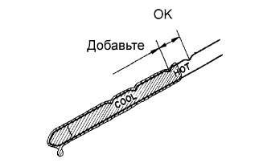

ЖИДКОСТЬ ДЛЯ АВТОМАТИЧЕСКОЙ ТРАНСМИССИИ > ПРОВЕРКА БЕЗ СНЯТИЯ С АВТОМОБИЛЯ |
| 1. ПРОВЕРЬТЕ УРОВЕНЬ ТРАНСМИССИОННОЙ ЖИДКОСТИ |
|  |
Установите автомобиль на ровную поверхность и включите стояночный тормоз.
При работающем на холостом ходу двигателе и нажатой педали тормоза установите рычаг переключения передач во все положения от Р до L. Затем верните его в положение Р.
Извлеките щуп и вытрите его насухо.
Вставьте его обратно в трубку на всю длину.
Вытащите его обратно и убедитесь, что уровень жидкости расположен на уровне НОТ.
Если уровень не находится в диапазоне HOT, добавьте трансмиссионную жидкость.